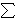
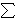

Algoritam index calculus:
1. Izbor faktorske baze
Izaberemo podskup F = {p1,
p2, ... , pm}
od G sa svojstvom da se relativno velik broj elemenata
iz G može prikazati kao produkt elemenata iz F.
2. Linearne relacije u logaritmima
Za slučajan broj k, 0
 k
n - 1,
izračunamo gk, te ga pokušamo
prikazati kao produkt elemenata iz F:
k
n - 1,
izračunamo gk, te ga pokušamo
prikazati kao produkt elemenata iz F:
gk =
 pi c,
ci
pi c,
ci
 0.
0.
Ukoliko smo u tome uspjeli, logaritmiramo dobivenu relaciju,
te tako prikažemo k mod n kao linearnu kombinaciju
logaritama:
k  
ci logg pi
(mod n).

ci logg pi
(mod n).
Ponavljamo ovaj postupak sve dok ne dobijemo
barem m takvih relacija.
Obično se zadovoljavamo s m + 10
relacija, jer tada s velikom vjerojatnošću pripadni sustav
od m + 10 jednadžbi s m nepoznanica ima jednstveno
rješenje.
3. Rješavanje sustava:
Rješimo linearni sustav od, recimo, m + 10 jednadžbi
s m nepoznanica, te tako dobijemo vrijednosti
logg pi.
4. Računanje x = logg h:
Za slučajan broj k, 0
k
n - 1,
izračunamo h  gk, te ga pokušamo
prikazati kao produkt elemenata iz F:
gk, te ga pokušamo
prikazati kao produkt elemenata iz F:
h gk =
pi d,
di
0.
Ukoliko nismo u tome uspjeli, onda izaberemo novi k,
a ukoliko smo uspjeli, onda logaritmiramo dobivenu relaciju,
te tako dobijemo da je
x = logg h =
(
di logg pi
- k ) (mod n).

 *
presudna su svojstva distribucije prostih brojeva,
ponajprije činjenica da ih ima beskonačno mnogo.
Preciznije, broj prostih brojeva koji su manji od realnog broja
x asimptotski je jednak x / ln x.
Činjenica da je vrlo teško naći eliptičku krivulju velikog
ranga, najvažniji je ograničavajući faktor za primjenu
ove metode na grupe eliptičkih krivulja nad konačnim poljem.
Ovo je upravo i predstavljalo motivaciju za uvođenje
eliptičkih krivulja u kriptografiju.
*
presudna su svojstva distribucije prostih brojeva,
ponajprije činjenica da ih ima beskonačno mnogo.
Preciznije, broj prostih brojeva koji su manji od realnog broja
x asimptotski je jednak x / ln x.
Činjenica da je vrlo teško naći eliptičku krivulju velikog
ranga, najvažniji je ograničavajući faktor za primjenu
ove metode na grupe eliptičkih krivulja nad konačnim poljem.
Ovo je upravo i predstavljalo motivaciju za uvođenje
eliptičkih krivulja u kriptografiju.
 (ln p
ln ln p) ).
(ln p
ln ln p) ).